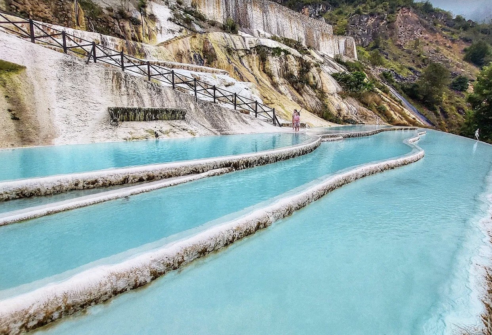
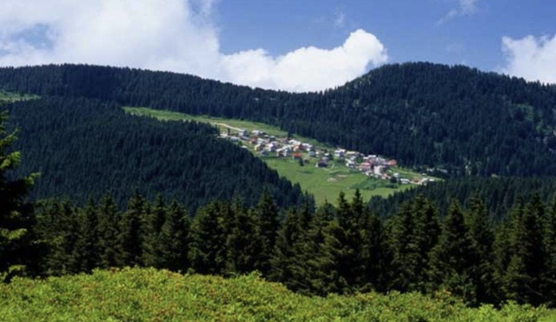

Giresun Kalesi
Giresun Kalesi, kenti ikiye bölen yarımadanın zirvesinde, M.Ö. 2. yüzyılda Pontus Kralı I. Pharnakes tarafından inşa ettirilmiş stratejik bir savunma yapısıdır. İç kale ve dış surlardan oluşan bu antik kale, günümüzde Milli Mücadele kahramanı Topal Osman Ağa’nın anıt mezarına ev sahipliği yaparak şehrin manevi değerini de sırtlamaktadır. Şehri 360 derecelik panoramik bir açıyla izleme imkanı sunan bu bölge, Helenistik dönemden Osmanlı'ya kadar uzanan katmanlı tarihiyle Giresun'un en köklü mirasıdır.

Giresun Adası
Kıyıdan yaklaşık 1,6 deniz mili uzaklıkta bulunan Giresun Adası, Karadeniz’in üzerinde yerleşim izleri taşıyan ve bitki örtüsüne sahip tek adası olmasıyla benzersiz bir coğrafi değerdir. Mitolojide Amazon kadınlarının üssü olarak bilinen ve Argonotların efsanelerinde kilit bir durak olan ada, Bizans dönemine ait manastır kalıntıları ve surlarıyla tarihin derin katmanlarını barındırır. Her yıl düzenlenen Aksu Şenlikleri'nin merkezinde yer alan bu ada, hem ekolojik bir sit alanı hem de Giresun'un mistik ruhunu temsil eden bir kültür durağıdır.

Kuzalan Şelalesi
Gür ladin ormanlarının arasından süzülerek dökülen Kuzalan Şelalesi, Giresun'un hırçın ama bir o kadar da büyüleyici doğasının en saf halini temsil eder. Sadece görsel bir şölen sunmakla kalmayan bu şelale, çevresindeki zengin bitki örtüsü ve karstik kayaç yapısıyla bölgenin ekolojik dengesinin en önemli parçalarından biridir.

Mavi Göl
Kuzalan Tabiat Parkı sınırları içinde bulunan Mavi Göl, sodalı suyun kireç taşlarıyla birleşmesi sonucu oluşan cam göbeği rengiyle büyüleyici bir görünüme sahiptir. Özellikle güneşli günlerde Karadeniz’in yoğun yeşilliği arasında parlayan bu "nazar boncuğu", su kimyasının ve jeolojik yapının oluşturduğu nadir bir doğa harikasıdır.

Göksu Travertenleri
Dereli ilçesinde yer alan Göksu Travertenleri, mineralli suların oluşturduğu bembeyaz terasları ve turkuaz havuzlarıyla "Karadeniz'in Pamukkale'si" olarak adlandırılmaktadır. Mineralli suyun debisi ve kalsiyum karbonat yapısının yarattığı bu görsel zenginlik, son yıllarda yapılan çevre düzenlemeleriyle şehrin en önemli turizm destinasyonlarından biri haline gelmiştir.

Kulakkaya Yaylası
Yaklaşık 1500 metre rakımda yer alan Kulakkaya Yaylası, geniş düzlükleri ve geleneksel yayla mimarisiyle Karadeniz kültürünün yaşayan bir örneğidir. Tarihi taş köprüleri ve tertemiz havasıyla doğallığını korumayı başarmış olan bu bölge, doğa yürüyüşü ve fotoğrafçılık meraklıları için bölgenin en değerli açık alanlarından biri olarak kabul edilir.